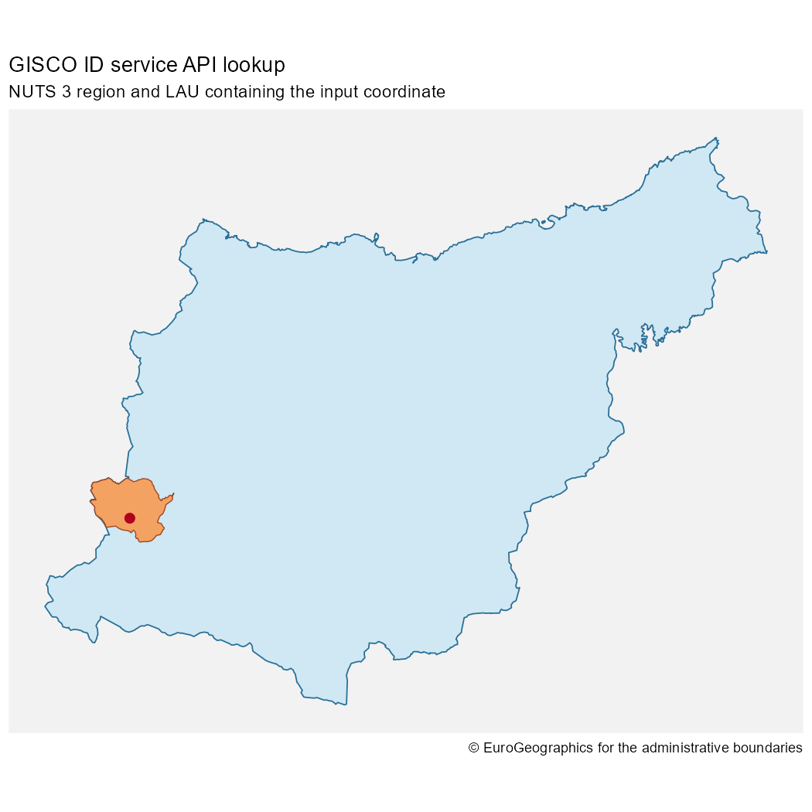
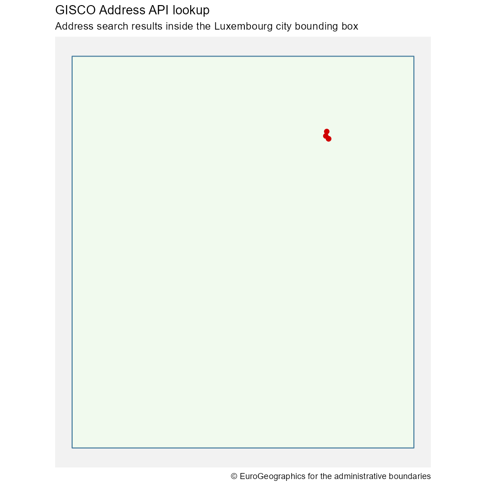

Overview
Most giscoR workflows should start with the higher-level download functions, such as gisco_get_countries(), gisco_get_nuts() or gisco_get_lau(). These functions download complete GISCO datasets and return sf objects that can be filtered, joined and mapped locally.
The GISCO APIs are useful when a workflow starts from a coordinate, address or identifier and you need a targeted lookup instead of a complete dataset. giscoR includes wrappers for two API families:
-
gisco_id_api_*()functions query the GISCO ID service API. -
gisco_address_api_*()functions query the GISCO Address API.
These functions use live GISCO services. Results can change as services and source datasets are updated, and unavailable services return NULL.
GISCO ID service API
The GISCO ID service API identifies GISCO features from coordinates or IDs. It is useful when you have a point location and need to know which NUTS region, LAU, country, river basin, biogeographical region or census grid cell contains it.
For example, the following code queries the Basque Country coordinates used in the package examples and compares the matching NUTS and LAU geometries.
library(giscoR)
library(ggplot2)
x <- -2.5
y <- 43.06
nuts3 <- gisco_id_api_nuts(x = x, y = y, nuts_level = 3)
lau <- gisco_id_api_lau(x = x, y = y)
place <- sf::st_as_sf(
data.frame(name = "Input coordinate", x = x, y = y),
coords = c("x", "y"),
crs = 4326
)Most ID service wrappers can return either geometry or attributes. Use geometry = FALSE when you only need identifiers and metadata:
nuts <- gisco_id_api_nuts(
x = x,
y = y,
nuts_level = 3,
geometry = FALSE
)
nuts
#> # A tibble: 1 × 3
#> id stat_levl_code OBJECTID
#> <chr> <int> <chr>
#> 1 ES212 3 ES212Use geometry = TRUE, the default, when you want an sf object suitable for mapping.
ggplot(nuts3) +
geom_sf(fill = "#cfe8f3", color = "#2a6f97", linewidth = 0.4) +
geom_sf(data = lau, fill = "#f4a261", color = "#9c4221", linewidth = 0.3) +
geom_sf(data = place, color = "#b00020", size = 2.5) +
coord_sf() +
theme_minimal() +
theme(
panel.background = element_rect(fill = "grey95", color = NA),
axis.line = element_blank(),
axis.text = element_blank(),
panel.grid = element_blank()
) +
labs(
title = "GISCO ID service API lookup",
subtitle = "NUTS 3 region and LAU containing the input coordinate",
caption = gisco_attributions()
)
NUTS 3 and LAU geometries returned by the GISCO ID service API
You can also query NUTS regions by ID:
gisco_id_api_nuts(nuts_id = "ES21", nuts_level = 2)
#> Simple feature collection with 1 feature and 1 field
#> Geometry type: POINT
#> Dimension: XY
#> Bounding box: xmin: -2.616427 ymin: 43.0433 xmax: -2.616427 ymax: 43.0433
#> Geodetic CRS: WGS 84
#> # A tibble: 1 × 2
#> nuts_id geometry
#> * <chr> <POINT [°]>
#> 1 ES21 (-2.616427 43.0433)GISCO Address API
The GISCO Address API supports address search, reverse geocoding and lookup of available administrative address components. It can be useful when a workflow starts with a human-readable address rather than a GISCO feature ID.
Use the lookup helpers to inspect available address components:
gisco_address_api_countries()
#> # A tibble: 31 × 1
#> L0
#> <chr>
#> 1 AT
#> 2 BE
#> 3 BG
#> 4 CH
#> 5 CY
#> 6 CZ
#> 7 DE
#> 8 DK
#> 9 EE
#> 10 EL
#> # ℹ 21 more rows
gisco_address_api_provinces(country = "LU")
#> # A tibble: 12 × 1
#> L1
#> <chr>
#> 1 CAPELLEN
#> 2 CLERVAUX
#> 3 DIEKIRCH
#> 4 ECHTERNACH
#> 5 ESCH-SUR-ALZETTE
#> 6 GREVENMACHER
#> 7 LUXEMBOURG
#> 8 MERSCH
#> 9 REDANGE
#> 10 REMICH
#> 11 VIANDEN
#> 12 WILTZ
gisco_address_api_cities(country = "LU")
#> # A tibble: 542 × 1
#> L2
#> <chr>
#> 1 ABWEILER
#> 2 AHN
#> 3 ALLERBORN
#> 4 ALSCHEID
#> 5 ALTLINSTER
#> 6 ALTRIER
#> 7 ALTWIES
#> 8 ALZINGEN
#> 9 ANGELSBERG
#> 10 ANSEMBOURG
#> # ℹ 532 more rows
gisco_address_api_roads(country = "LU", province = "Capellen", city = "Dippach")
#> # A tibble: 16 × 2
#> TF PC
#> <chr> <chr>
#> 1 BEIM WAASSERTUERM 4972
#> 2 ECKERBIERG 4974
#> 3 IM INBERG 4974
#> 4 OP WAISSE MUOR 4974
#> 5 ROUTE DE LUXEMBOURG 4972
#> 6 ROUTE DE LUXEMBOURG 4973
#> 7 ROUTE DES TROIS CANTONS 4972
#> 8 RUE BELLE-VUE 4974
#> 9 RUE CENTRALE 4974
#> 10 RUE DE BETTANGE 4974
#> 11 RUE DE HOLZEM 4974
#> 12 RUE DE LA FONTAINE 4974
#> 13 RUE DES ROMAINS 4974
#> 14 RUE DU CIMETIÈRE 4974
#> 15 RUE JEAN-PIERRE KIRSCH 4974
#> 16 SAUER AARBECHT 4974Use gisco_address_api_search() for structured geocoding. Search endpoints support approximate string matching, so exact spelling is not always required. The bounding-box endpoint can provide context for the returned address points.
address <- gisco_address_api_search(
country = "LU",
city = "Luxembourg",
road = "Rue Alphonse Weicker"
)
bbox <- gisco_address_api_bbox(
country = "LU",
city = "Luxembourg"
)Search, reverse and bounding-box calls return sf objects. If a search result contains coordinates, they can be passed to the reverse endpoint:
gisco_address_api_reverse(
x = address$X[1],
y = address$Y[1],
country = "LU"
)
#> Simple feature collection with 5 features and 14 fields
#> Geometry type: POINT
#> Dimension: XY
#> Bounding box: xmin: 6.16786 ymin: 49.6315 xmax: 6.169307 ymax: 49.63328
#> Geodetic CRS: WGS 84
#> # A tibble: 5 × 15
#> LD TF L2 L1 L0 I3 PC N0 N1 N2 N3 OL X
#> * <chr> <chr> <chr> <chr> <chr> <chr> <chr> <chr> <chr> <chr> <chr> <chr> <dbl>
#> 1 4 RUE A… LUXE… LUXE… LU LUX 2721 LU LU0 LU00 LU000 8FX8… 6.17
#> 2 3 RUE J… LUXE… LUXE… LU LUX 2180 LU LU0 LU00 LU000 8FX8… 6.17
#> 3 41B AVENU… LUXE… LUXE… LU LUX 1855 LU LU0 LU00 LU000 8FX8… 6.17
#> 4 2 RUE J… LUXE… LUXE… LU LUX 2180 LU LU0 LU00 LU000 8FX8… 6.17
#> 5 5 RUE A… LUXE… LUXE… LU LUX 2721 LU LU0 LU00 LU000 8FX8… 6.17
#> # ℹ 2 more variables: Y <dbl>, geometry <POINT [°]>Use the returned geometries directly with ggplot2:
ggplot(bbox) +
geom_sf(fill = "#f1faee", color = "#457b9d", linewidth = 0.5) +
geom_sf(data = address, color = "#d00000", size = 2) +
coord_sf() +
theme_minimal() +
theme(
panel.background = element_rect(fill = "grey95", color = NA),
axis.line = element_blank(),
axis.text = element_blank(),
panel.grid = element_blank()
) +
labs(
title = "GISCO Address API lookup",
subtitle = "Address search results inside the Luxembourg city bounding box",
caption = gisco_attributions()
)
Structured address search result and city bounding box
Choosing between APIs and downloads
Use download functions when you need complete datasets:
countries <- gisco_get_countries(year = 2024)
nuts <- gisco_get_nuts(year = 2024, nuts_level = 2)Use API functions when you need targeted answers:
- Which NUTS region contains this coordinate?
- Which LAU contains this coordinate?
- What address is closest to this coordinate?
- Which address components are available for a country, province or city?
For repeated spatial analysis over many records, downloading a full dataset and joining locally is often more robust than making one API request per row. API requests are best suited to interactive lookup, validation and small batches.
Defensive use
API services are remote dependencies. In scripts, check for NULL before using the result:
res <- gisco_id_api_country(x = x, y = y)
if (is.null(res)) {
message("The GISCO ID service API did not return a result.")
} else {
res
}In packages or tests, skip API-dependent checks when GISCO is not reachable. For reproducible workflows, keep API calls close to the point where the result is needed and avoid assuming that live services will always return exactly the same number of rows.